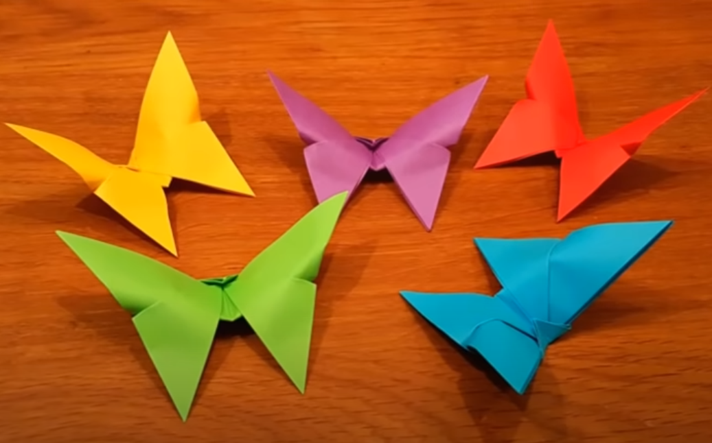

Learn how to do different Origami.
About Us1. Easy Rabbit
-- A baby rabbit is called a kit, a female is called a doe and a male is called a buck.
-- Rabbits are very social creatures that live in groups.
-- A rabbit's teeth never stop growing!
2. Easy Butterfly

-- Butterfly wings are transparent.
-- Butterflies only live for a few weeks.
-- The most common butterfly in the US is the Cabbage White.